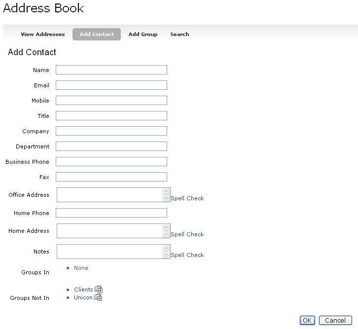

To add a new contact to the Address book, click the Add Contact option. The following fields are requested with only the Name field being required:
All of the fields above can also be edited by selecting the appropriate row from the View Addresses or Search views.
